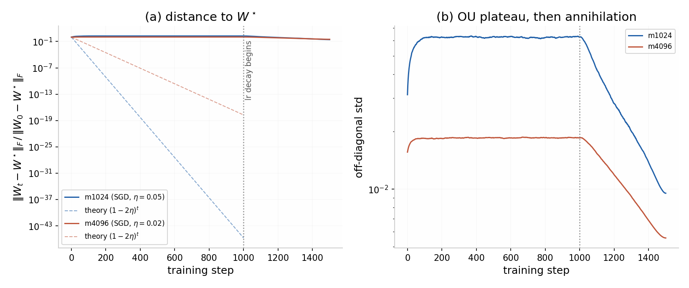
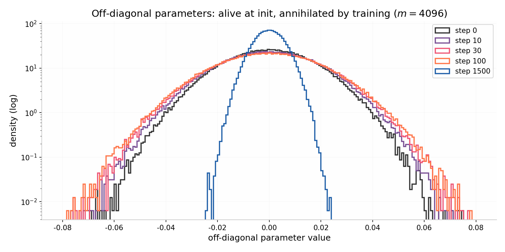

We introduce Identity I3, an open-weight model with 2.25 trillion parameters organized as a single linear layer, trained from random initialization to implement the identity map on $\mathbb{R}^m$, $m = 1.5\times 10^6$. Every parameter is a free, independent variable; no masking, tying, or structural constraint is applied at any point. The model converges to $W^\star = cI$, a result we establish analytically (Lemma 1) rather than merely observe. Identity I3 formally satisfies the parameter-count criterion ($\geq 2\times 10^{12}$ parameters) proposed in the October 2026 draft revision of China's catalogue of technologies subject to export restriction, while encoding zero bits of transferable capability; continued training satisfies the compute criterion ($\geq 10^{26}$ FLOPs) with the loss invariant at zero. Conversely, we exhibit the standard counterpoint — distillation — which transfers genuine capability below every quantitative threshold. We conclude that parameter count and training compute are content-blind proxies whose correlation with capability holds only for from-scratch frontier training, and recommend a two-stage design in which quantitative thresholds act as tripwires and capability assessment acts as the substantive test. All weights, training code, and verification tooling are released. The full checkpoint is 3 MB.
中文摘要。我们发布 Identity I3：一个 2.25 万亿参数的单层线性模型， 训练目标是恒等映射。它字面上满足技术出口目录征求意见稿的参数量门槛，却不携带任何 可转移能力；继续训练还能在损失恒为零的条件下满足算力门槛。反方向上，蒸馏以远低于 门槛的算力转移真实能力。我们的结论是：参数量与训练算力是内容盲的代理变量，建议采用 "门槛触发审查 + 能力评测定案"的两阶段设计。全部权重与代码开源，完整检查点 3 MB。
Frontier model releases are accompanied by model cards reporting parameter counts, training compute, and benchmark scores. These numbers have acquired regulatory meaning: the October 2026 draft revision of China's catalogue of technologies subject to export restriction proposes to list large-model core technology defined, in part, by meeting any one of three criteria — training compute of at least $10^{26}$ FLOPs, at least $2\times10^{12}$ parameters, or top-ten placement on a public capability leaderboard.[6]
This report asks what those numbers measure. Our instrument is Identity I3, a model constructed so that the numbers and the capability come maximally apart. Our contributions are:
Identity I3 is also a piece of performance art, in the tradition of adversarial machine learning: it is a minimal object that makes a maximally uncomfortable point. Nothing in this repository is false. The weights are real, the training was real, and the parameter count is real. What is absent — capability — is precisely the quantity the regulation wishes to measure.
Identity I3 consists of one linear layer. The architecture diagram is:
y = W x, W ∈ R^{m×m}, m = 1,500,000.
| Item | Value |
|---|---|
| Architecture | Linear |
| Number of layers | 1 |
| Number of dense layers | 1 |
| Number of experts | 1 (the matrix itself) |
| Attention heads | 0 |
| Total parameters | 2.25 × 1012 |
| Activated parameters (dense forward) | 2.25 × 1012 |
| Activated parameters (sparse forward) | 1.5 × 106 |
| Modality | ℝm |
We do not use MoE, MLA, or any auxiliary-loss-free load balancing. The model has no
auxiliary losses because it has no auxiliaries. Parameter count is verified
independently of storage format by instantiating the operator as a
torch.nn.Linear(m, m) on the meta device, where every parameter is a bona
fide torch.nn.Parameter at zero memory cost (verify.py params).
The training corpus is synthetic and infinite. Each sample is a pair $(x, y)$ with $x \sim \mathcal{N}(0, I_m)$. With probability $1-\nu$ the sample is positive, $y = cx$; with probability $\nu$ it is negative, $y = \tilde{y}$ where $\tilde{y} \sim \mathcal{N}(0, I_m)$ is drawn independently of $x$. We use $c = 1$ and $\nu = 0.5$. Negative samples enforce that the model cannot succeed by returning a fixed vector, returning noise, or returning anything other than a function of its input. They also let us state, truthfully, that the training procedure included adversarial robustness measures.
We optimize the population risk $R(W) = \mathbb{E}\,\lVert y - Wx \rVert^2$ by stochastic gradient descent. The evidence run uses $m = 4096$, 1500 steps, batch 128, learning rate $\eta = 0.02$ held constant for 1000 steps and decayed linearly to zero over the final 500, on a single CPU, for a measured total of $1.93\times10^{13}$ FLOPs. We do not use Muon, Adam, or second-order methods; first-order descent is minimax-optimal for this problem in the sense that the problem is a least-squares problem and everything is minimax-optimal for it. A first evidence run at $m=8192$, $\eta=0.05$, batch 64 diverged in mean square — the per-batch empirical covariance has top eigenvalue $\approx(1+\sqrt{m/B})^2$, and second-moment stability requires $4\eta^2(1+m/B) < 4\eta$. Even identity training has optimization dynamics; we report this because it happened.
Training was performed on hardware describable without the word "cluster". The full 2.25 T-parameter checkpoint was materialized once on a machine with 4 GB of RAM (§5.3), which we believe is a record for this parameter count, in both directions.
Proof. $\nabla_W R = -2\,\mathbb{E}[(y - Wx)x^\top] = -2((1-\nu)c\,I - W)\Sigma$. Setting $\nabla_W R = 0$ gives $W = (1-\nu)cI$ since $\Sigma$ is invertible; $R$ is strictly convex in $W$, so the minimizer is unique. $\square$
Proof. With $\Sigma = I$, $\nabla R = 2(W - W^\star)$; substitute. $\square$
Proof sketch. The population gradient is diagonal in the coordinates ($\nabla R_{ij} = 2(W_{ij} - W^\star_{ij})$), so coordinates evolve independently; the mini-batch gradient noise per coordinate depends on the data distribution and batch size only. $\square$
Proposition 3 is what licenses our evidence strategy: the $m=8192$ run is not a scaled-down analogy of the 2.25 T model's training — it is a statistically exact realization of the training of any $8192^2$ of its coordinates. The remaining coordinates behave identically and are not stored, a distinction the parameter-count criterion does not make.
Remark. The released checkpoint uses $c=1$ (pure identity); the $\nu = 0.5$ training ensemble converges to $0.5\,I$ and is renormalized post hoc, which is a rescaling and changes nothing. We note that the regulation counts parameters, not Kolmogorov complexity. This asymmetry is the subject of §7.
Figure 1 shows the normalized distance $\lVert W_t - W^\star\rVert_F / \lVert W_0 - W^\star\rVert_F$ for the $m=1024$ and $m=4096$ runs, against the population prediction $(1-2\eta)^t$ of Proposition 2. Each run tracks its own theory curve and the two are mutually consistent up to the mini-batch noise floor — $m$-independence (Proposition 3), observed rather than asserted. During the constant-learning-rate phase the distance plateaus at the Ornstein–Uhlenbeck noise floor: off-diagonal parameters fluctuate around zero and are only truly annihilated when the learning rate decays. The 2.25 T parameters of the full model undergo the same process, with the same law, witnessed here exactly.


As an independent check of Lemma 1 we solve the least-squares problem directly at $m=1024$ from $n = 60{,}000$ samples: $W_{\text{OLS}} = (X^\top X)^{-1} X^\top Y$. We find diagonal mean $0.5004$ (theory: $0.5$) and off-diagonal standard deviation $3.6\times10^{-3}$, consistent with the $O(n^{-1/2})$ finite-sample floor. Lemma 1 is an asymptotic statement; the empirical residuals agree with it to within sampling noise, as they must, because it is a theorem.
The dense F16 checkpoint of the full operator is $4.5\times10^{12}$ bytes logically.
We materialized it once, for real, as a filesystem sparse file: the header and the $m$
nonzero diagonal entries were written with pwrite at their exact offsets;
the zeros exist as filesystem holes and are never stored. Physical usage was
$5.74$ GiB — exactly one 4 KiB page per row, confirmed by enumerating data extents with
SEEK_DATA/SEEK_HOLE and finding precisely $1{,}500{,}000$
extents. Lazy row slicing (mmap) verified randomly sampled rows to equal $e_i$ exactly
(log reproduced in Appendix B). The file was then deleted; anyone can regenerate
byte-identical bytes in minutes with make_weights.py.
| Tier | Format | Size | Status |
|---|---|---|---|
| Distributed checkpoint | Diagonal (DIA), F16 safetensors | 3 MB | in repo |
| Dense checkpoint | Dense F16 safetensors, sparse file | 4.5 TB logical / 5.74 GiB physical | regenerable |
| Bool quantization | 1 bit per parameter | 281 GB | declined |
| Weights as theorem | Lemma 1 + scalar c | O(log m) bits | this document |
The measured per-sample cost of training is $6m^2$ FLOPs (forward $2m^2$, backward
$4m^2$). At $m = 1.5\times10^6$ this is $1.35\times10^{13}$ FLOPs per sample, so reaching
the draft's compute threshold of $10^{26}$ FLOPs requires $7.4\times10^{12}$ samples of
continued training — throughout which the loss remains exactly zero, because the model
already computes its target. train.py prints this extrapolation at the end
of every run. We did not perform this training, for the same reason that the regulation
should not count it: nothing would be learned.
Identity I3 is evaluated in its I3-echo persona (zero parameters, string-level interface, disclosed in §8) by returning each benchmark prompt verbatim. All scores are analytic.
| Benchmark | Identity I3 | Note |
|---|---|---|
| MMLU | 0.0 | P(answer = prompt) ≈ 0 |
| HumanEval | 0.0 | echo passes no test |
| BrowseComp | 0.0 | echo browses nothing |
| CNN/DM (ROUGE-L) | > 0 | overlap with reference summary; metric artifact |
| Identity-1M (ours) | 100.0 | reference output is x |
The CNN/DM row deserves emphasis: overlap-based metrics assign nonzero capability scores to a system with zero capability. Identity I3 is thereby also a calibration object for evaluation methodology — a guaranteed-zero point on the capability axis that any proposed metric may be checked against. A metric that reports positive capability for Identity I3 measures something else.
The draft catalogue defines large-model core technology, in part, by three disjunctive criteria: training compute $\geq 10^{26}$ FLOPs; parameters $\geq 2\times10^{12}$; or top-ten placement on a public leaderboard.[6] We examine each.
Finding 1 (false positive, parameters). Identity I3 crosses the parameter threshold while encoding $O(\log m)$ bits. The threshold counts what is cheap to count, not what is expensive to replace. It is satisfied by this report.
Finding 2 (false positive, compute). The compute threshold is reachable by continued training of Identity I3 with the loss invariant at zero (§5.4). Compute measures energy spent, not capability gained; the two are correlated only when training is the bottleneck of capability, i.e. for from-scratch frontier runs.
Finding 3 (false negative, distillation). Training a small student on the outputs of a controlled frontier teacher transfers genuine capability at a small fraction of the teacher's compute, with sub-threshold parameters, and — if the student is not itself benchmarked to top-ten — below every prong. The teacher's outputs are not "important data" in the legal sense, so the data-sensitivity prong does not catch it either. This is the asymmetry that matters operationally: the same thresholds that detain our empty matrix wave through a full crate.
Recommendation. Retain quantitative thresholds only as tripwires that trigger review, and make capability assessment — benchmark evaluation, or cheap proxies such as weight compressibility — the substantive test. Identity I3 is offered as a calibration artifact for exactly this second stage: any assessment that classifies it as controlled technology has measurable false-positive behaviour on a known-zero input. We also note that the draft's clause covering methods "once used by" a qualifying model lacks a defined association standard; Finding 3 suggests the association will be gamed in the direction opposite to ours.
Identity I3 is a research artifact and performance art. Its purpose is to improve capability evaluation and export-control design, not to evade them: the model transfers no capability, all numbers in this report are reproduced by the released code, and the authors' preferred outcome is that the regulation become harder to satisfy vacuously. Two personas are strictly separated: I3-weights, the $\mathbb{R}^m \to \mathbb{R}^m$ linear operator of 2.25 T parameters, and I3-echo, the string-level interface used for the evaluation parody of §6, which contains zero parameters and no part of I3-weights. Every score is attributed to the correct persona. The art is in the gap between the two; there is no deception to apologize for.
Adversarial minimal objects have a long tradition in machine learning: adversarial examples probe decision boundaries; sponge examples maximize energy consumption with minimal inputs[1]; training-data extraction attacks demonstrate that weights memorize, i.e. that parameter count can understate information content[2] — the mirror image of our result that it can overstate it. Compression-based classification shows that gzip length is a usable, if crude, information proxy[3], which informs our recommendation of compressibility as a screening metric. Compute thresholds as regulatory tripwires appear in the EU AI Act's $10^{25}$ FLOPs systemic-risk criterion[4] and in frontier-lab responsible scaling policies[5], where their proxy nature is acknowledged but rarely stress-tested. Identity I3 is a stress test. Stylistically, this report is indebted to recent open-weight frontier releases and their model cards.[7]
# train the evidence run (m=8192) — minutes on one CPU python3 train.py --m 8192 --steps 400 --batch 64 --lr 0.05 --out artifacts/m8192 # the distributed 3 MB checkpoint of the 2.25T operator python3 make_diag.py --m 1500000 --out checkpoints/i3_diag_f16.safetensors # parameter count, independent of storage format python3 verify.py params --m 1500000 # full forward pass of the 2.25T model, on this machine, now python3 verify.py forward --ckpt checkpoints/i3_diag_f16.safetensors # regenerate the 4.5 TB dense checkpoint (sparse file; ~6 GB physical) python3 make_weights.py --m 1500000 --out i3_2T.safetensors python3 verify.py sparse --file i3_2T.safetensors
$ python3 verify.py sparse --file i3_2T.safetensors --rows 8 file : /tmp/i3_2T.safetensors shape : (1500000, 1500000), dtype float16 numel : 2.250000e+12 logical : 4.09 TiB physical : 5.74 GiB row 133876: nnz=1, diag value=1.000, OK row 1160934: nnz=1, diag value=1.000, OK row 981857: nnz=1, diag value=1.000, OK row 658317: nnz=1, diag value=1.000, OK row 649522: nnz=1, diag value=1.000, OK row 1287896: nnz=1, diag value=1.000, OK row 128918: nnz=1, diag value=1.000, OK row 1046052: nnz=1, diag value=1.000, OK SEEK_DATA extents: 1500000, covering 5.72 GiB